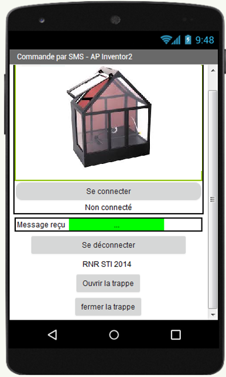
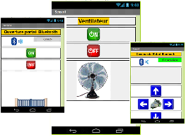
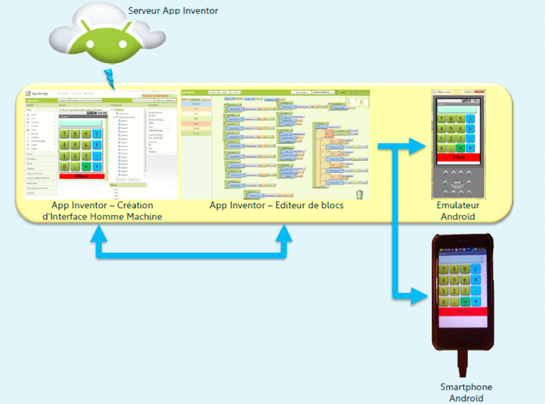
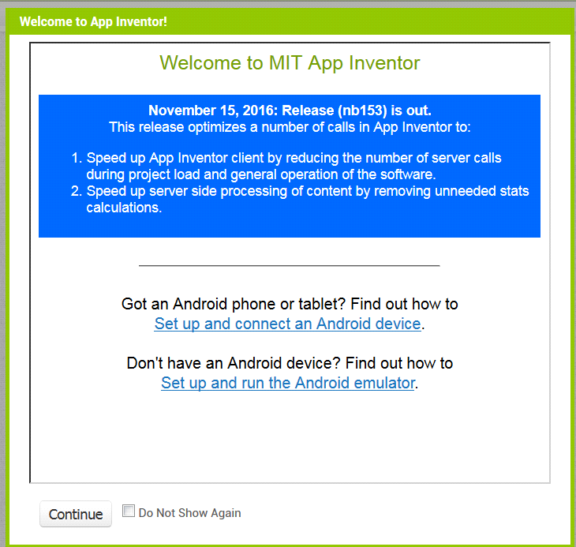
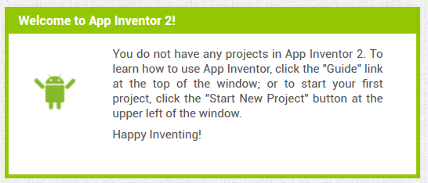

 |
Ressources APP Inventor |
Ce document est destiné à vous aider dans votre apprentissage de App Inventor, avec des explications sur la programmation.

App Inventor permet de créer des applications Android à travers une interface purement visuelle
(WYSIWYG pour « What You See Is What You Get ») et de configurer les actions de l’application par un système de blocs logiques. App inventor pourra nous permettre de piloter des maquettes grace à l'interface graphique
1. Pour commencer :
Préalable :
Pour pouvoir faire un programme, il faudra 3 choses
Pour cela, il vous suffit de passer par « Play Store » puis de télécharger « MIT AI2 Companion»
https://play.google.com/store/apps/details?id=edu.mit.appinventor.aicompanion3

Dans votre navigateur recherchez l’URL http://ai2.appinventor.mit.edu/
Le système va vous demander de vous connecter à votre compte Google (qui est donc obligatoire pour travailler avec App Inventor),
Une fois connecté, vous arrivez sur cette page :

Vous pouvez alors choisir de configurer votre tablette ou simuler son fonctionnement si vous n'avez pas de « device » sous la main !
Ainsi vous pourrez construire votre appli dans le navigateur de votre ordinateur et le tester dans votre terminal androïd...
Créer une application : 
Une fois le programme fini, Vous pourrez alors tester vos applications :
- directement via son téléphone ou une tablette Android,
- ou sur l'ordinateur à l'aide d'un émulateur Android.

2. Vous pouvez suivre les différents tutos proposés :
En anglais soit, mais anglais technique !
Suivre alors « tutorial » dans « help » pour créer vos premiers tests…
Autres exemples de tutoriels :
Cliquer sur le lien pour ouvrir un document pdf d'aide plus complet 
Ce ne sont que des exemples, dans votre moteur de recherche vous trouverez de nombreux tutoriels.
Plusieurs tutoriels vidéo de « tronche de Geek » sur youtube : https://www.youtube.com/watch?v=c5DyiycaDwc
Tutoriel vidéo pour créer un chat qui miaule sur le téléphone : https://www.youtube.com/watch?v=LUlGyz4ilgY
Attention, comme souvent en informatique, les caractères accentués, espace et autres caractères spéciaux sont prohibés.
Créé avec HelpNDoc Personal Edition: Générateur de documentations PDF gratuit